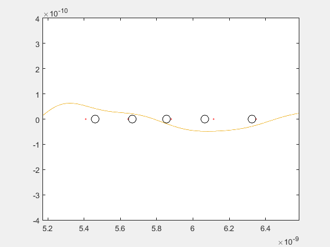

Phonons simulator: Horizontal Version
% We will be using silicon atoms for our chain (we take the distance between % the nearest neighbour atoms in a silicon crystal as our lattice parameter a) m=28*1.660538921*10^(-27); %mass of an atom (kg) K=59.7939; %Hook's constant (kg/s^2) a=5.43*10^-10*sqrt(3)/4; %distance between atoms (m) N=50; %Number of atoms in the chain T=295; %Temperature (K) P=[19:N-18]; %Normal modes we want to combine to make the representation (all of them in this case) Kb=1.38064852*10^(-23); %Boltzmann constant hbar=1.054571800*10^(-34); %Dirac constant B=1/(Kb*T); %Finding the different possible values of k for the conditions entered. ii=mod(N,2); %0 if the number of atoms is even, 1 if it is odd if ii == 1 n=[-N/2+1/2:N/2-1/2]; else n=[-N/2:N/2-1]; end % By this we ensure that n is a vector of N equally spaced integers for % which every k will be between -pi/a and pi/a (so that we work in the 1st Brillouin Zone) k=(2*pi*n)/(N*a); %Computing frequency for each wavenumber (we plug k in the dispersion relation) w=2*sqrt(K/m)*abs(sin(k*a/2)); %Finding corresponding energies E=hbar.*w.*(1./(exp(B*hbar*w)-1)+1/2); [o,u]=find(n==0); %Finding the w=0 mode E(u)=Kb*T; %Using the limit when w->0 %Finding amplitudes A=sqrt(2*E/K); % Equilibrium positions: x=[1:N]*a; %For each atom xfine=[1:0.01:N]*a; %For a fine grid, to represent the wave that the atoms follow. % Now we define a the fine grid where we will be evaluating the wave. if ii == 1 nfine=[-N/2+1/2:0.01:N/2-1/2]; else nfine=[-N/2:0.01:N/2-1]; end Nfine=length(nfine); % We obtain the "photos" to make the GIF figure; timestart=1200; timelapse=1280; for t = timestart:timelapse dx=[]; tt=t*(10^(-14)); %Small timelapse as we have very high frequencies % Now we sum the position variation of an atom for each normal mode (we do this for every atom and store the distances in a vector) dx= sum((A(P)'*ones(1,N)).*cos((w(P)'*ones(1,N)).*tt-(k(P)'*n).*a),1); % Then we do the same, but this time applied to the fine grid, to % represent the wave dxwave= sum((A(P)'*ones(1,Nfine)).*cos((w(P)'*ones(1,Nfine)).*tt-(k(P)'*nfine).*a),1); xsol=x+dx; % Adding the position variation to the equilibrium position of each atom we get their actual position y=zeros(length(xsol),1); %To get all the atoms in the x axis(y=0) %If N is greater than 6 making a plot of all the atoms would not be the %best call. Instead we can divide the representation into two cases: if N > 6 %case 1 if ii == 1 % Again, differentiating betwwen even or odd number of atoms e=(N+1)/2; else e=N/2; end %We will plot only 5 atoms, with their equilibrium positions and %the wave. plot(x(e-2:e+2),y(e-2:e+2),'o','Color',[1 0 0],'MarkerSize',1,'LineWidth',1); %Equilibrium position %title(['movimiento cadena monoatómica 1D, modos normales: 1:' num2str( N ) ]) hold on axis([x(e-3) x(e+3) -0.4*10^(-9) 0.4*10^(-9)]); plot(xsol(e-2:e+2),y(e-2:e+2),'o','Color',[0 0 0],'MarkerSize',10,'LineWidth',1); %Atoms hold on plot(xfine,dxwave) %Wave else %case 2 plot(x,y,'o','Color',[1 0 0],'MarkerSize',1,'LineWidth',2); %title(['movimiento cadena monoatómica 1D, modos normales: 1:' num2str( N ) ]) hold on axis([0 x(N)+a -0.4*10^(-9) 0.4*10^(-9)]); plot(xsol,y,'o','Color',[0 0 0],'MarkerSize',10,'LineWidth',1); hold on plot(xfine,dxwave) end %For each plot we take out what is called a frame, this frame will be %transformed into an image with the comand frame2im and saved in thee %im{} matrix frame= getframe(1); im{t} = frame2im(frame); hold off end % Creation of GIF filename = 'Monoatomic_chain.gif'; for i = timestart:timelapse [Ag,map] = rgb2ind(im{i},256); %From each image we find its corresponding %indexed matrix and color map.The indexed matrix has a value in each %cell that corresponds to a specific color (combination of red, blue, %green) in the color map. if i == timestart imwrite(Ag,map,filename,'gif','LoopCount',Inf,'DelayTime',.1); else imwrite(Ag,map,filename,'gif','WriteMode','append','DelayTime',.1); end end